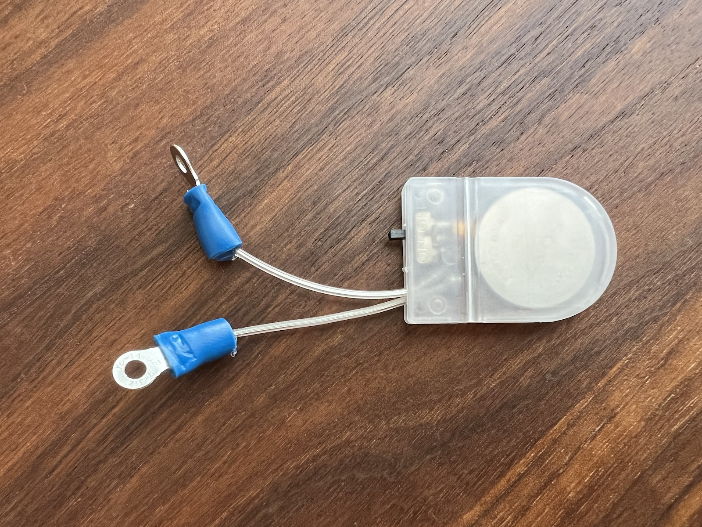
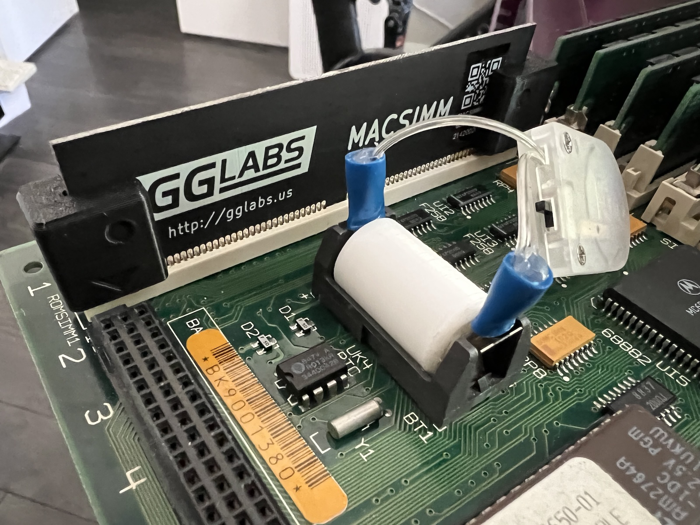
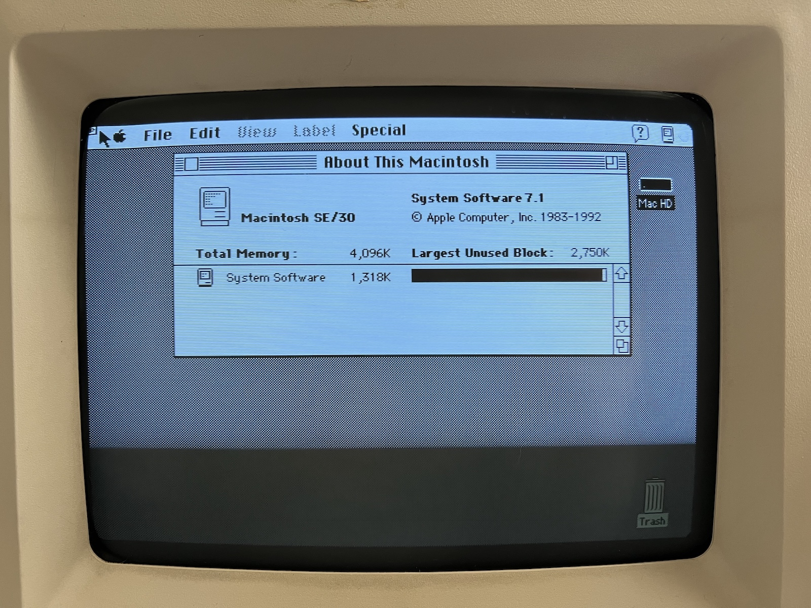
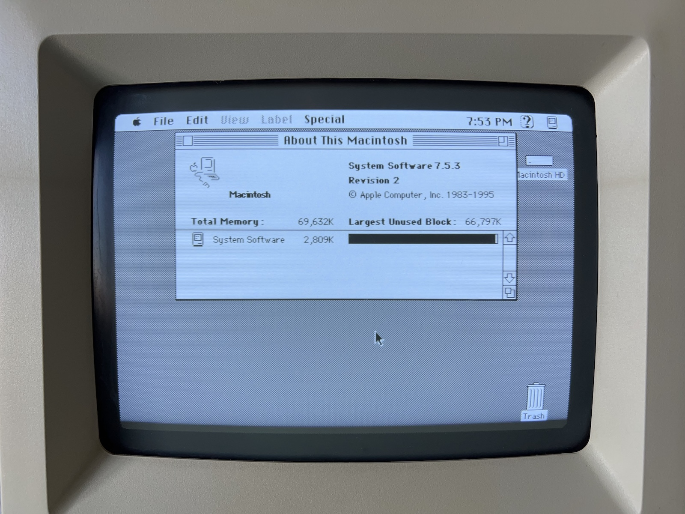

After getting the SE/30 up and running with some new parts, I added in a few more upgrades.
To begin with, I cleaned off the adhesive residue from the front of the case. This was some serious residue, very chunky and difficult to remove. It took a good amount of Goo Gone and elbow grease, but now there’s no sign of it. I considered retrobriting the case, but decided against it since the process can make the plastic more brittle, and it seemed fragile enough already.
The next thing I did was install a more modern battery: a CR2032 coin cell. I attached ring terminals to the battery holder.

Next, I 3D printed a spacer to keep the ring terminals in place. It’s a bit of a hack, but it works for now. I might figure out something more elegant later.

At the same time, I installed a GGLABS MACSIMM to replace the old ROM SIMM. The original ROM of the SE/30 limits the Mac to 8MB of RAM due to old 24-bit code, even though the CPU and OS were capable of addressing much more RAM. The MACSIMM contains a fully compatible drop-in replacement for the original ROM that enables 32-bit addressing. With eight SIMM slots on the logic board, the SE/30 is actually capable of handling up to 128MB of RAM.
The machine originally came with four 1MB SIMMs installed, giving me a total of 5MB of RAM (including the 1MB soldered on the logic board). In 24-bit mode, it seems that the OS only uses the installed SIMMs, with the soldered 1MB being reserved for some things like video or ROM shadowing.

After the ROM upgrade (and an upgrade to System 7.5.3 as well), I filled the remaining four SIMM slots with 16MB SIMMs, giving me a total of 69MB RAM.

I still have to address the floppy drive issues, and I want to replace the hard drive with something that’ll let me use a SD or microSD card for more reliability.